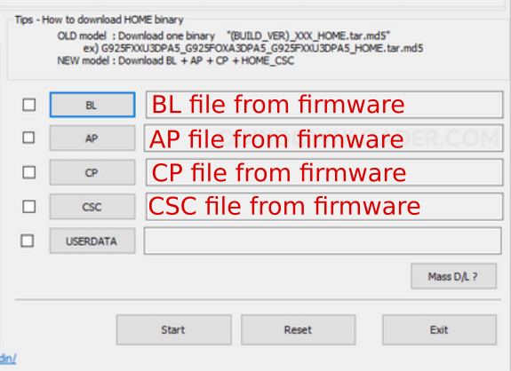
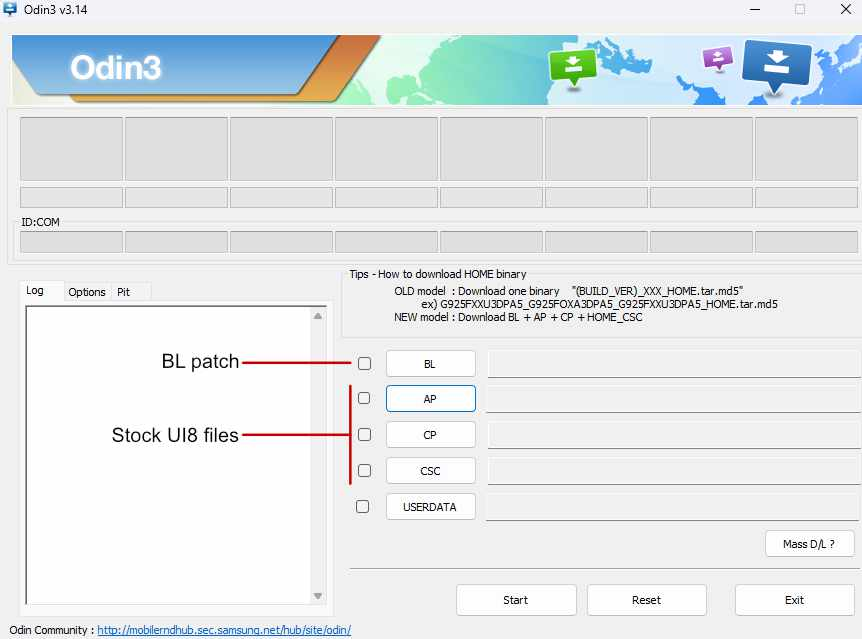

• Samsung Galaxy A54 5G (SM-A546E o SM-A546B)
• Download firmware stock required for LichUI (view Add-ons page), and extract
• Download and extract Odin
• Download and install Samsung Driver
• Reboot your device into bootloader mode
• Connect your device to your PC via USB
• Open Odin and select firmware sctock files; Bl, AP, CP, CSC

• Click on Start and wait for the process to finish
• Odin finishes autoreboot and skip initial setup
• Connect your device to internet
• Activate developer options
• Enable OEM unlocking and USB debugging
• Continue with recovery installation
Documentation
Device Requirements
• Samsung Galaxy A54 5G (SM-A546E or SM-A546B) • Stock firmware with the required bootloader • Unlocked bootloaderPC Requirements
• Windows 10 or Windows 11 (64-bit recommended) • Odin (Samsung flashing tool) • Samsung USB DriversRecovery Requirements:
• TWRP (Team Win Recovery Project) or • OrangeFox Recovery • Compatible with your device modelFile Requirements
• LichUI ROMEssential Backups:
• Personal data backup (photos, contacts, etc.) • App data backup (using Titanium Backup or similar) • EFS partition backup (for IMEI restoration)Backup Storage:
• External storage device • Cloud storage service • PC with sufficient space • Multiple backup locations (recommended)
⚠️ WARNING: Installing custom firmware can damage your device if not done correctly. Proceed at your own risk.
⚠️ Guaranteed: Unlocking the bootloader and installing a custom ROM can void your device's warranty, cause loss of knox, among other things.
⚠️ Guaranteed: Unlocking the bootloader and installing a custom ROM can void your device's warranty, cause loss of knox, among other things.
1. Download last UI7 stock and flash with odin
• SM-A546E • SM-A546B2. Check bootloader unlock in UI7
If you flash the latest UI7, check the following: • If under OEM unlocking in Developer options it says something like "Autoblocker" > find Autoblocker in settings and disable it. • If the bootloader is unlocked in UI7, check the "Press power key to continue" screen at startup.
3. Flash UI8 with BL patch
Download firmware stock and bl in Add-ons • Use BL patch in BL seccion in Odin 4. Check that everything is okay
• Bootloader unlockOTA Updater for LichUI
LichUI includes an OTA (Over-The-Air) updater to keep your device updated with the latest improvements and fixes.What are OTA Updates?
OTA updates allow you to download and install new versions of LichUI directly from your device, without the need for a computer. However, there are updates that will require a clean installation, when there is a binary change in the stock firmware.Types of Updates
Updates via OTA • Sames Bootloader and Binary
Updates Manual • Different bootloader and binary

Requirements for OTA App • Root accesss (Magisk, Ksu, etc) Download speed • We currently do not have our own server, which causes OTA downloads to be slow depending on the time and region. • If you would like to support the project, you can make a donation to purchase a better server (the monthly price per server is over $10 USD), or if you have your own server, you can collaborate with the project.